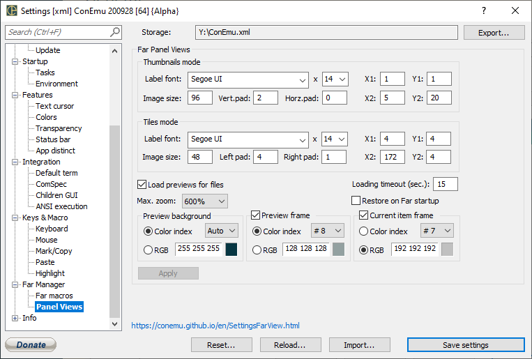

Settings: Views

Far Panel Views
Thumbnails mode
RTEXT
X1 Spacing in pixels from the left side of cell to the left side of preview
Y1 Spacing in pixels from the top side of cell to the top side of preview
Image size Size in pixels of preview square in Thumbnails mode Default is 96
Vert.pad Vertical spacing in pixels (top and bottom) of text label
Horz.pad Horizontal spacing in pixels (left and right) of text label
X2 Spacing in pixels from the right side of preview to the right side of cell
Y2 Spacing in pixels from the bottom side of preview to the bottom side of cell (text label is placed here)
Text labels font height in Thumbnails mode
Tiles mode
Text labels font name in Thumbnails mode
RTEXT
X1 Spacing in pixels from the left side of cell to the left side of preview
Y1 Spacing in pixels from the top side of cell to the top side of preview
Image size Size in pixels of preview square in Tiles mode Default is 48
Left pad Spacing in pixels on the left of text label
Right pad Spacing in pixels on the right of text label
X2 Spacing in pixels from the right side of preview to the right side of cell (text label is placed here)
Y2 Spacing in pixels from the bottom side of preview to the bottom side of cell
Text labels font height in Tiles mode
Text labels font name in Tiles mode
Load previews for files Generate previews for files
Load previews in subfolders Generate previews for folders (by first 4 files)
Loading timeout (sec.) Maximal duration of preview generation (per file)
Use PicView2 for previews (Max. zoom) Try to use PicView2 plugin to generate previews (FAR2 only)
Restore on Far startup Restore panel views on Far startup
Preview background
Maximal zoom for images smaller than preview
- Color index
- RGB
Preview frame
- Color index
- RGB
Current item frame
- Color index
- RGB
Apply
Thumbnails mode
Tiles mode
Preview background
Supported extensions
Store preview cache
- No cache
- plugin folder
- user folder
- specified folder
Choose...